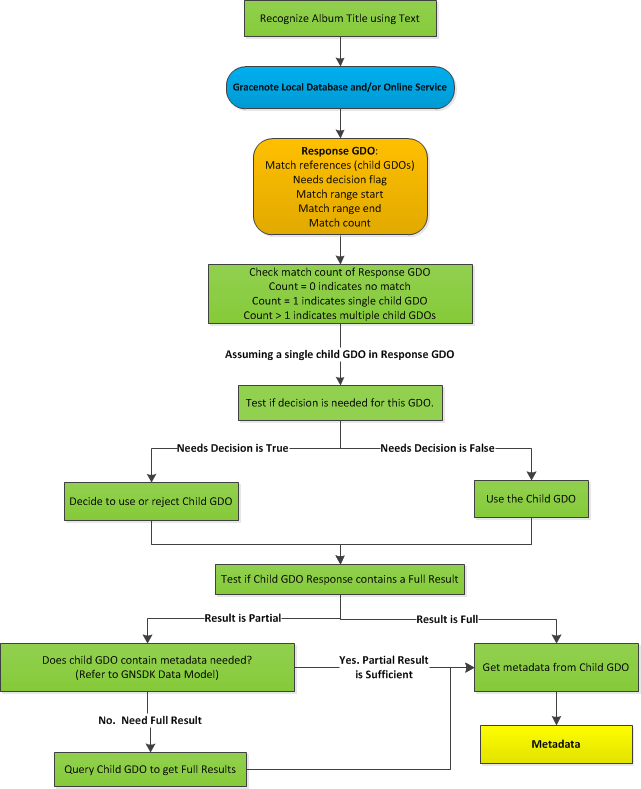
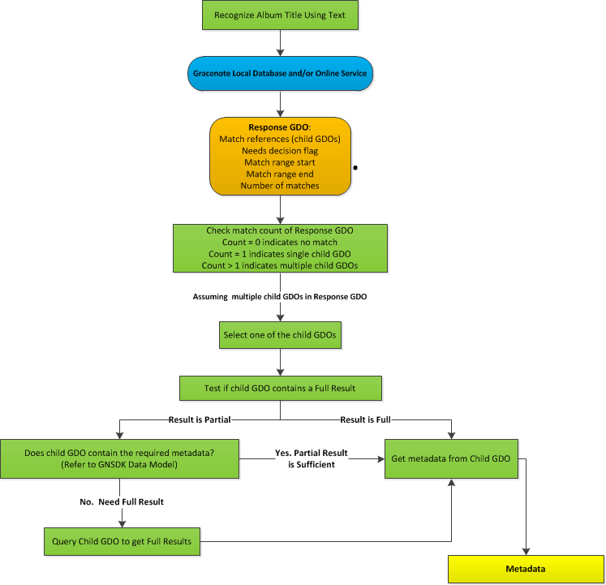

A Gracenote identification query can return no matches, a single match, or multiple matches. The workflow for managing single and multiple GDOGracenote Data Object: Containers most-commonly used to store information returned by a query. GDOs can contain metadata values (names, titles, external IDs, and so on) that can be accessed by an application using Value keys. GDOs can also contain references to other GDOs, which can be accessed using Child GDO keys. matches is similar, but not identical. The following sections describe these two workflows.
The simplest example of a GDO workflow is when an identification query returns a single match. For example, suppose there is a query to look up a track by name and find its containing album. If that Track only exists on one album, GNSDK for Desktop identifies the single album and returns a response GDO that contains the core metadata for the identified album. The application can then access the metadata using value keys.
As described in GDO Workflows, some single GDO responses may require a decision by the application or end user. To address this possibility, the GDO workflow should include a test query using the GNSDK_GDO_VALUE_RESPONSE_NEEDS_DECISION value key to determine if Gracenote has pre-determined that the GDO response needs a decision.
The application should also test the GDO to determine if it contains partial or full results. Use the GNSDK_GDO_VALUE_FULL_RESULT value key for this test. If the response is partial, the application can either use the partial information or perform an additional query to get the full results. In some cases, the information returned in a partial response may be sufficient for the purpose of the query. If so, the application can simply get the values from the partial response.
For a list of values returned in a partial result, see the Data Model in the GNSDK for Desktop C API Reference.
The following diagram shows the basic workflow, followed by the application steps in detail.

Gracenote identification queries often return multiple matches. For example, suppose that a Track exists on multiple Albums, such as the original Album, a compilation Album, and a greatest hits Album. In this case, the query returns a Response GDO that contains multiple child Album GDOs. Each GDO represents a possible Album match for the query. When this happens, the end-user needs to select which Album they want. Each Response GDO returns enough metadata for this purpose. Based on the user’s selection, the application can then send another query to Gracenote to return the GDO for the chosen Album.
The diagram below shows the general application GDO workflow for multiple GDO responses. As described in GDO Workflows, all multiple GDO match responses require a decision by the application or end user. Therefore, it is optional to test if a multiple GDO match needs a decision.
In general, after choosing a Child GDO from the multiple matches, the application should test it to determine if it contains partial or full results. Use the GNSDK_GDO_VALUE_FULL_RESULT value key for this test. If the response is partial, the application can either use the partial information or perform an additional query to get the full results. In some cases, the information returned in a partial response may be sufficient for the purpose of the query. If so, the application can simply get the values from the partial response.
For a list of values returned in a partial result, see the Data Model in the GNSDK for Desktop C API Reference.
The following diagram shows the basic workflow, followed by the application steps in detail.

Related Information